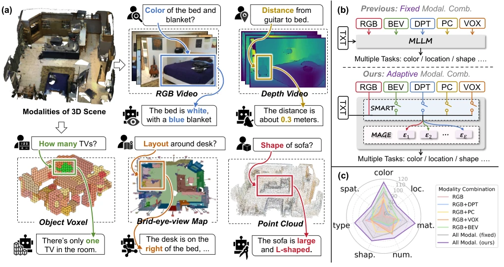
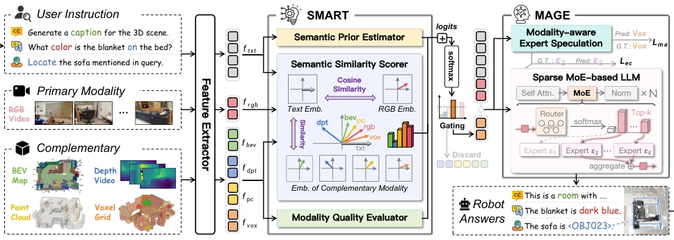
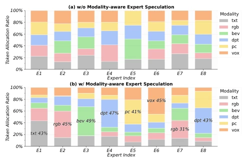
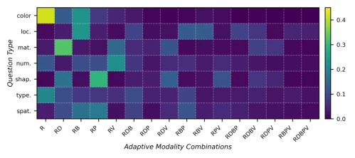
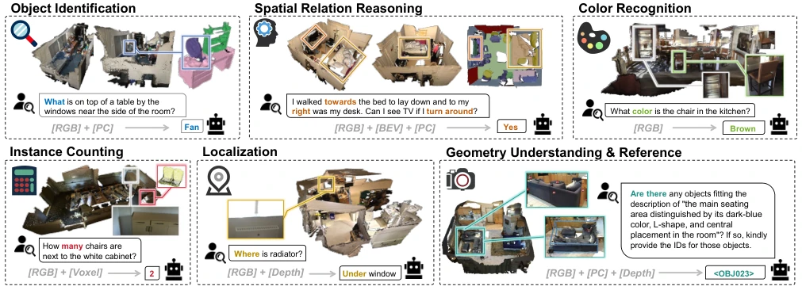
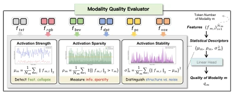
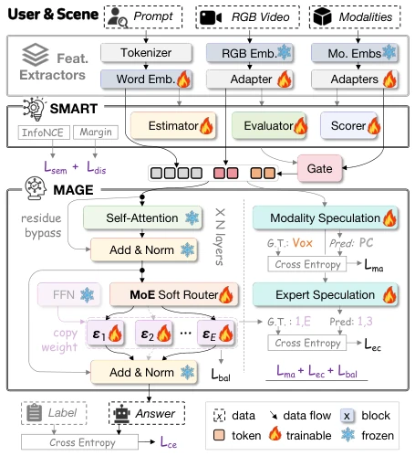
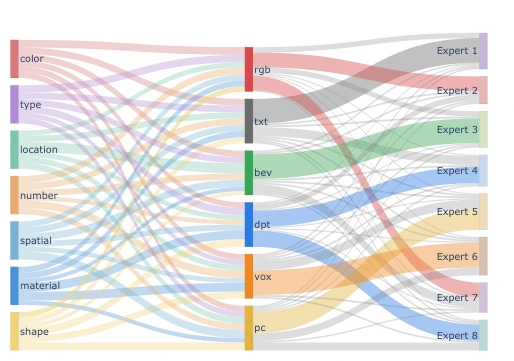
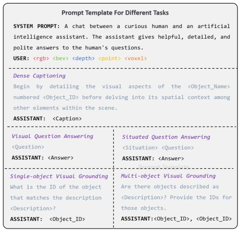
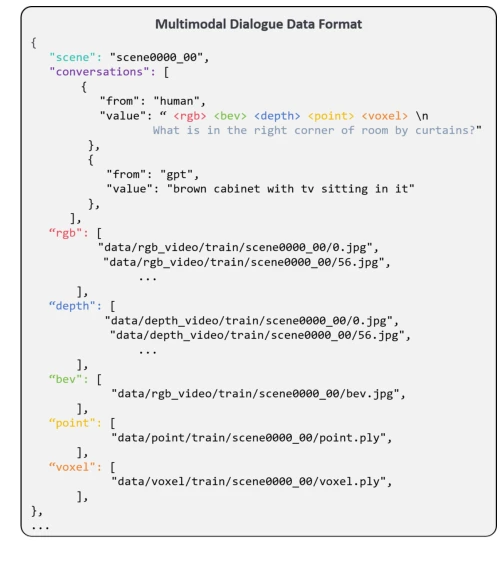

This SmartMage adds an "intelligent butler" to 3D scene understanding. Previously, MLLMs were like a "communal pot", feeding all modalities together; regardless of whether asking about color or shape, RGB and point clouds were all used, resulting in high noise and high compute consumption. The authors devised a SMART routing + MAGE expert mechanism, essentially playing a new trick with MoE. Although the SOTA results are indeed appealing, upon closer inspection, training still relies on specific datasets like ScanNet, and generalization depends on RGB-only video performance. Moreover, "dynamic routing" sounds high-end, but essentially it is still weighting based on semantic similarity; do not expect it to truly "understand" the necessity of modalities like humans. However, changing modality selection from static to dynamic is a thought process worth affirming; at least it saves some invalid computation, representing a good attempt for optimizing the perception layer of embodied intelligence, just do not expect it to solve all long-tail problems.
The core of embodied intelligence is understanding 3D scenes, but existing MLLMs mostly adopt fixed modality combinations [29, 88, 98]. This ignores the preference differences of different queries for modalities, such as relying mainly on RGB for color questions and more on point clouds for shape questions. Forcibly fusing all modalities not only introduces semantic noise but also leads to computational waste and inference dilution. For example, the modality interference problem pointed out in [7], fixed fusion cannot solve. The authors point out that this rigid design leads to performance degradation in complex indoor environments, thus requiring an architecture capable of dynamically scheduling modalities based on semantics to achieve efficient and interpretable reasoning. Existing methods often treat all modalities as equally important, lacking perception of task semantics, leading to poor performance on specific tasks and failing to fully utilize the complementarity of multimodal information.

Figure 1: Motivation of SmartMage. (a) Different question types exhibit inherent modality preferences. (b) Previous MLLMs fuse a fixed modality set, while SmartMage performs semantic-guided adaptive selection and assigns tokens to modality-specialized experts. (c) Our method outperforms fixed-modality approaches across various semantic categories.
The overall process is divided into feature extraction, global routing, and local expert allocation. First, the Omni-modal extractor uniformly encodes RGB, depth, BEV, point cloud, and voxel, ensuring heterogeneous data is aligned in the same space. Next, the SMART module acts as a global scheduler, dynamically selecting auxiliary modalities through the Semantic Prior Estimator (SPE), Semantic Similarity Scorer (SSS), and Modality Quality Evaluator (MQE). MQE specifically focuses on activation statistical features to prevent low-quality modality interference. Finally, the MAGE module performs fine-grained routing inside the LLM, utilizing Modality-Aware Expert Speculation (MES) to assign tokens to specific experts. This global-to-local adaptive mechanism ensures the flexibility of modality selection while achieving modality-aware expert specialization through the MoE structure, enabling different experts to process tokens of different modalities, thereby enhancing the targeting of reasoning.

Figure 2: Overview of SmartMage. The omni-modal feature extractor first encodes text, RGB, depth, BEV, point cloud, and voxel inputs into a unified embedding space. The SMART module serves as a semantics-aware modality scheduler. It evaluates semantic priors, semantic similarity, and modality quality to choose an instruction-dependent set of auxiliary modalities. The selected modalities are combined with the primary RGB and text features and passed into the MAGE module. Within MAGE, the modality-aware expert speculation component injects modality cues into the sparse MoE-based LLM, promoting expert specialization in handling modality-specific information.
Tested on 5 benchmarks derived from ScanNet, including ScanQA, ScanRefer, etc. Compared to SOTA like Ross3D, SmartMage improves Acc@0.5 by 5.1 on ScanRefer and F1@0.5 by 6.4 on Multi3DRefer. The newly added ScanFacet diagnostic benchmark reveals modality preferences for different semantic categories, such as color tasks preferring RGB and spatial tasks preferring voxels. Ablation studies prove both SMART and MAGE are effective, and adaptive selection outperforms fixed combinations. It also remains competitive on RGB-only video benchmarks, demonstrating robustness. In terms of efficiency, training time is reduced, and inference latency is controllable. Overall, this method achieves dynamic optimization of modality resources while maintaining performance, providing new ideas for the deployment of multimodal large models in the 3D field.

Figure 6: Modality-aware expert speculation. Comparison of token-to-expert allocation ratios without (a) and with (b) the Modality-aware Expert Speculation (MES) mechanism.

Figure 5: Modality preference across seven question types on ScanFacet. Each cell shows the normalized frequency of a modality combination selected for a given question type. Question types are color, location, material, number, shape, type and spatial relation. R,B,D,P,V denotes RGB, BEV, Depth, Point Cloud, Voxel, respectively.

Figure 8: Qualitative visualization. The model adaptively selects task-relevant modalities for interpretable reasoning.
其他图片Other Figures

Figure 3: Details of the Modality Quality Evaluator. We model modality quality using activation statistics that cap- ture strength, sparsity, and stability, and convert them into a reliability score for routing.

Figure 4: Overview of the end-to-end training strategy.

Figure 7: Hierarchical routing from question types to modal- ities and experts. Line thickness represents normalized rout- ing frequency, showing that different question types prefer distinct modality–expert pathways.

Figure 11: Prompt templates for different tasks. Unified prompt structures for dense captioning, visual question an- swering, and visual grounding tasks, each specifying how the assistant should interpret modality inputs and produce task-specific outputs.

Figure 9: Multimodal dialogue data format. Each instance links a dialogue to a 3D scene and provides aligned RGB, BEV, depth, point cloud, and voxel inputs together with hu- man–model conversation turns.